En la Parte 1 aprendiste qué es una tabla y de qué se compone. Ahora viene lo más importante: saber qué tablas hacen falta cuando alguien te cuenta una idea. Nadie empieza una base de datos escribiendo código. Primero se piensa, se describe y se dibuja; el código viene después y es la parte fácil.
Al terminar esta parte serás capaz de:
Estas palabras se explican con detalle dentro de cada punto. Aquí tienes un adelanto para que no te sorprendan:
| Palabra | Significado breve |
|---|---|
| Entidad | Una «cosa» de la que quieres guardar datos: cliente, pedido, producto. Cada entidad acabará siendo una tabla |
| Atributo | Una característica de una entidad: el nombre de un cliente, el precio de un producto. Cada atributo acabará siendo una columna |
| Relación | La conexión entre dos entidades: un cliente hace pedidos |
| Regla | Una condición que los datos deben cumplir: el precio no puede ser negativo |
Es el método que usan los profesionales para empezar cualquier base de datos: antes de pensar en tablas, hay que entender qué se quiere guardar y para qué. Se parte de una frase corriente («quiero una tienda online») y se acaba con una lista ordenada de cosas, características, conexiones y reglas.
Para no empezar a ciegas. Quien crea las tablas «a ojo» suele darse cuenta a mitad del proyecto de que le falta información, de que algo está duplicado o de que no puede responder una pregunta básica (por ejemplo, «¿qué productos compró este cliente?»). Cambiar la estructura con datos ya guardados es mucho más costoso que pensarla bien al principio.
Porque la estructura de la base de datos condiciona todo lo demás: las consultas que podrás hacer, lo rápido que irá la aplicación y lo fácil que será ampliarla. Un diseño pensado con calma ahorra semanas de arreglos. Un diseño improvisado se paga con intereses.
El método tiene seis pasos. Los repetirás en cada proyecto:
Idea: «Quiero guardar los libros que presto a mis amigos». Siguiendo el método:
Un dueño de gimnasio dice: «Quiero controlar quién está apuntado a cada clase y cuándo paga cada socio». Aplicando el método surgen entidades como socio, clase, inscripción y pago, y preguntas que antes nadie se había planteado: ¿un socio puede apuntarse a varias clases? ¿Una clase tiene aforo máximo? ¿Se guarda el historial de pagos o solo el último? Cada pregunta sin respuesta es una decisión de diseño pendiente.
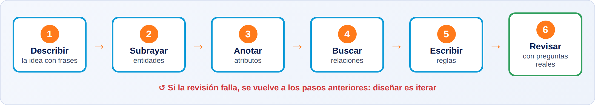
Qué ves en la imagen. Es un recorrido de seis estaciones de izquierda a derecha: describir, subrayar entidades, anotar atributos, buscar relaciones, escribir reglas y revisar. Debajo de cada estación aparece lo que se obtiene en ese paso. La flecha de vuelta indica que, si la revisión falla, se regresa a los pasos anteriores: diseñar es iterar.
Saltarse el análisis y crear tablas directamente («ya iré arreglándolo»). Con datos ya guardados, cada cambio de estructura obliga a migrar información y a modificar la aplicación.
Escribe la descripción del proyecto en un documento antes de abrir ninguna herramienta. Enséñasela a la persona que usará el sistema: si no la reconoce, falta algo.
Para un proyecto tuyo, escribe en tres frases qué quieres guardar y cuáles son las tres preguntas más importantes que debería poder responder. Si no sabes las preguntas, todavía no estás listo para diseñar.
Es la técnica de leer una descripción y clasificar sus palabras en cuatro grupos:
Convierte un texto ambiguo en una lista concreta. Es la manera más fiable de no olvidar nada y de que dos personas que lean la misma descripción lleguen a la misma estructura.
Muchos errores de diseño nacen de clasificar mal. Por ejemplo, guardar la ciudad como entidad cuando solo es un dato del cliente, o guardar el pedido como un atributo del cliente cuando es una entidad con vida propia. Aprender a distinguirlos evita esos fallos.
Para decidir si un sustantivo es una entidad o un atributo, hazte estas tres preguntas:
Para detectar relaciones, busca verbos entre dos entidades. Para detectar reglas, busca palabras de restricción.
Descripción: «Una tienda vende productos. Cada cliente puede hacer varios pedidos. Un pedido incluye uno o varios productos. De cada cliente guardamos nombre, email y teléfono. El email es obligatorio y no puede repetirse; el teléfono es opcional. Un producto tiene nombre y precio, y el precio no puede ser negativo».
Clasificación:
En una academia de idiomas, el director explica: «Los alumnos se matriculan en cursos. Cada curso lo imparte un profesor y tiene un máximo de 15 alumnos». Entidades: alumno, curso, profesor, matrícula. Relaciones: el alumno se matricula en cursos; el profesor imparte cursos. Regla: máximo de 15 alumnos por curso. La regla del aforo no se ve en ninguna tabla: deberá comprobarla la aplicación o la base de datos.
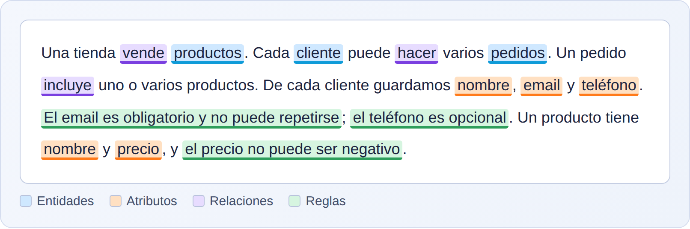
Qué ves en la imagen. Es el texto de la tienda con las palabras importantes coloreadas: azul para las entidades, naranja para los atributos, morado para las relaciones y verde para las reglas. Subrayar de esta forma es el primer paso de cualquier análisis.
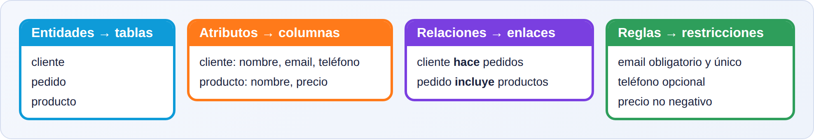
Qué ves en la imagen. Las mismas palabras, ya ordenadas en cuatro cajas: lo que acabará siendo tablas (entidades), columnas (atributos), enlaces entre tablas (relaciones) y restricciones (reglas). Esta lista es el material de partida del diseño de la Parte 3.
Convertir en entidad algo que es un simple atributo (por ejemplo, una tabla solo para el «color» cuando basta con un campo), o al revés, guardar como atributo algo con vida propia (como meter los pedidos dentro de una celda del cliente).
Busca las reglas escondidas: casi nunca aparecen escritas. Pregunta siempre: «¿Qué no puede pasar nunca?» y «¿Qué debe ser siempre verdad?».
Toma una descripción de tres o cuatro frases de cualquier negocio que conozcas. Colorea con cuatro colores sus entidades, atributos, relaciones y reglas. Si alguna palabra no cabe en ninguna categoría, probablemente no es relevante para la base de datos.
Un atributo es obligatorio cuando la fila no tiene sentido sin él. Es opcional cuando puede faltar sin que la fila pierda su utilidad. Esta decisión se toma para cada atributo, uno a uno, durante el análisis.
También se decide, para cada atributo, si debe ser único (no puede repetirse entre filas) y si tiene algún valor por defecto (el valor que se usa si nadie indica otro).
Protege la calidad de los datos. Si decides que el email es obligatorio, el sistema impedirá guardar clientes sin email. Si decides que es único, impedirá dos clientes con el mismo correo. Cada regla que dejas en manos de la base de datos es una regla que la aplicación no puede olvidar.
Si todo es opcional, las tablas se llenan de huecos y las consultas dan resultados engañosos (por ejemplo, clientes sin nombre en una lista de correo). Si todo es obligatorio, los usuarios no podrán guardar datos reales, porque a veces simplemente no los tienen. El equilibrio se decide caso por caso.
Para cada atributo, haz estas cuatro preguntas:
En CLIENTES:
nombre: obligatorio (sin nombre no sabes quién es).email: obligatorio y único (identifica al cliente al iniciar sesión).telefono: opcional (no todos lo darán).alta: obligatorio, con valor por defecto igual a la fecha de hoy.En una tienda online, fecha_envio en un pedido es opcional: está vacía hasta que el pedido sale del almacén. En cambio, estado es obligatorio y siempre tiene valor (por defecto, «pendiente»). Esta combinación permite saber, mirando solo la tabla, qué pedidos están sin enviar.
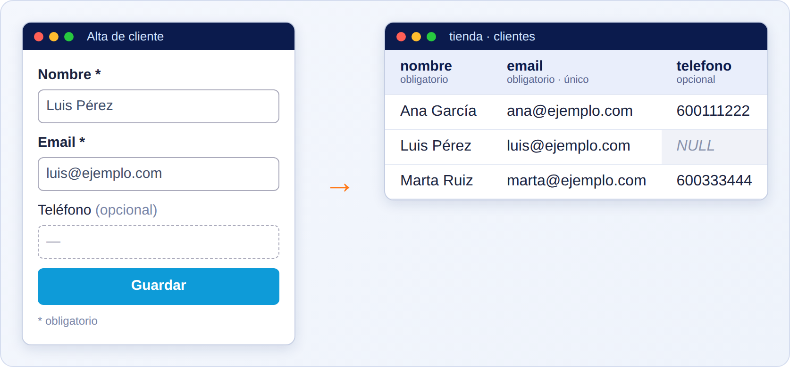
Qué ves en la imagen. A la izquierda hay un formulario de alta de cliente con los campos nombre y email marcados con un asterisco (obligatorios) y teléfono marcado como opcional. A la derecha está la tabla CLIENTES con las etiquetas «obligatorio», «único» y «opcional» sobre cada columna. La última fila (Luis) se guardó sin teléfono, y su celda aparece vacía (NULL).
productos con las columnas nombre, precio, descripcion y codigo_barras, decide cuáles son obligatorias, cuáles únicas y cuáles opcionales.hora_llegada_real. ¿Es obligatoria u opcional? ¿Por qué?nombre: obligatorio. precio: obligatorio (un producto sin precio no se puede vender). descripcion: opcional. codigo_barras: único y, según el caso, opcional (por ejemplo, para productos que no lo tengan), pero si existe no se repite.Marcar un campo como obligatorio «porque sería ideal tenerlo» en lugar de «porque sin él la fila no tiene sentido». Los usuarios acabarán rellenándolo con basura.
Empieza con pocos campos obligatorios (los imprescindibles) y añade más solo si hay una razón clara. Es fácil endurecer una regla más tarde y difícil relajarla cuando ya hay datos incoherentes.
Elige una tabla que hayas diseñado y escribe, para cada columna, una palabra: «obligatorio», «opcional», «único» o «con valor por defecto». Debe haber una justificación para cada elección.
Un CRM (del inglés Customer Relationship Management, «gestión de la relación con los clientes») es una aplicación para llevar el seguimiento de las personas y empresas con las que trabajas: quiénes son, qué les has ofrecido, qué has hablado con ellas y qué tareas tienes pendientes.
Este punto aplica el método de 2.1 a un caso real y completo, para que veas todo el proceso de principio a fin.
Es un ejercicio-modelo. Cuando termines, sabrás pasar de una frase tan vaga como «quiero un CRM» a una lista concreta de entidades, atributos y relaciones, y podrás repetirlo con cualquier otro proyecto.
Un CRM es uno de los proyectos más habituales que te pedirán, y mezcla casi todo lo que hay que saber: varias entidades relacionadas, historiales, estados, usuarios con permisos y tareas. Si sabes analizar un CRM, puedes analizar casi cualquier sistema de gestión.
Aplicamos los seis pasos.
Paso 1: describir la idea. «Mi equipo de ventas trabaja con empresas y con las personas que trabajan en ellas. Queremos apuntar cada oportunidad de venta, saber en qué fase está, qué hemos hablado (llamadas, emails y notas) y qué tareas tenemos pendientes. Cada vendedor entra con su usuario y ve lo suyo».
Paso 2: subrayar entidades.
| Entidad | Qué guarda |
|---|---|
| Usuario | Las personas del equipo que entran en el CRM |
| Empresa | Las organizaciones con las que se trabaja |
| Contacto (o cliente) | Las personas concretas, normalmente dentro de una empresa |
| Oportunidad | Una posible venta, con su importe y su fase |
| Tarea | Algo que hay que hacer, con fecha límite |
| Nota | Un apunte libre sobre una empresa, un contacto o una oportunidad |
| Llamada | El registro de una llamada con un contacto |
| El registro de un correo enviado o recibido | |
| Estado (fase) | Cada paso del proceso de venta: nuevo, en negociación, ganado, perdido |
Paso 3: atributos de cada entidad. Por ejemplo: usuario (nombre, email, contraseña cifrada, rol); empresa (nombre, sector, web, ciudad); contacto (nombre, email, teléfono, cargo); oportunidad (título, importe, fecha prevista de cierre); tarea (título, fecha límite, completada); nota (texto, fecha); llamada (fecha, duración, resumen); email (asunto, fecha, dirección: enviado o recibido).
Paso 4: relaciones.
Paso 5: reglas. El email de un usuario es único. Una oportunidad siempre pertenece a una empresa. Una oportunidad tiene un único estado en cada momento. El importe no puede ser negativo. Un vendedor solo ve las oportunidades que tiene asignadas (esta regla se resolverá con permisos, en las Partes 16 y 17).
Paso 6: revisar con preguntas reales. ¿Puedo saber qué oportunidades abiertas tiene cada vendedor? ¿Puedo ver todo el historial de una empresa (llamadas, emails, notas)? ¿Puedo listar las tareas que vencen esta semana? Con estas entidades y relaciones, sí.
Si el CRM fuera solo una libreta de empresas y contactos, bastaría con dos entidades: empresa y contacto, con la relación «una empresa tiene muchos contactos». Todo lo demás (oportunidades, tareas, historial) se añade por capas cuando el negocio lo pide.
Una pequeña consultora quiere un CRM. Empieza con empresas, contactos y oportunidades. A los tres meses piden registrar llamadas y emails, y un mes después, tareas con recordatorios. Como las entidades están bien separadas, cada ampliación es una tabla nueva enlazada a las existentes, sin rehacer lo anterior.
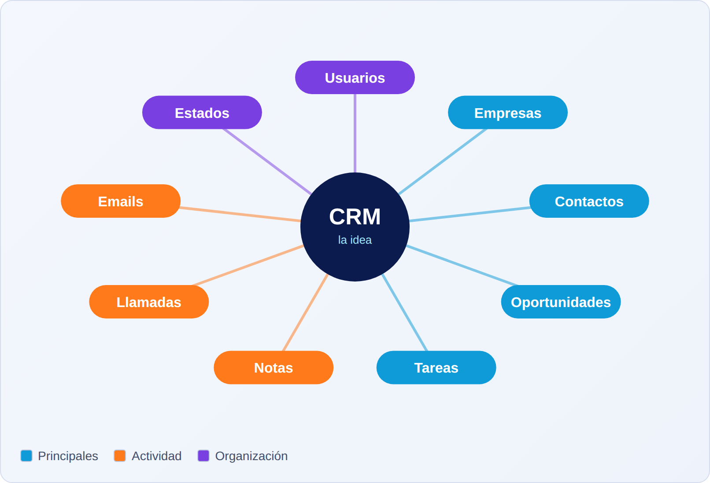
Qué ves en la imagen. En el centro está la idea («CRM») y a su alrededor las entidades que salen de analizarla. Las entidades principales están en azul, las de actividad (llamadas, emails, notas) en naranja y las de organización (usuarios, estados) en morado.
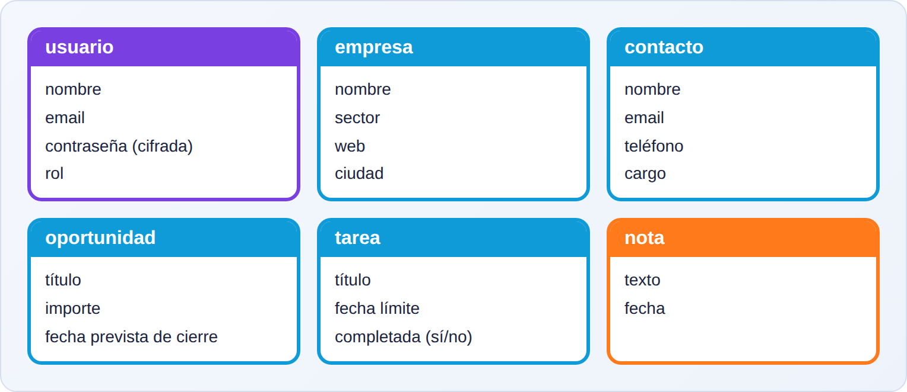
Qué ves en la imagen. Seis tarjetas, una por entidad, con la lista de sus atributos. Cada tarjeta es el borrador de una futura tabla: el título será el nombre de la tabla y cada línea será una columna.
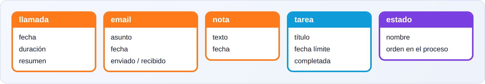
Qué ves en la imagen. Las entidades que registran lo que ocurre: llamadas, emails, notas, tareas y estados. Tienen pocos atributos propios, y su valor está en las relaciones con las demás entidades.
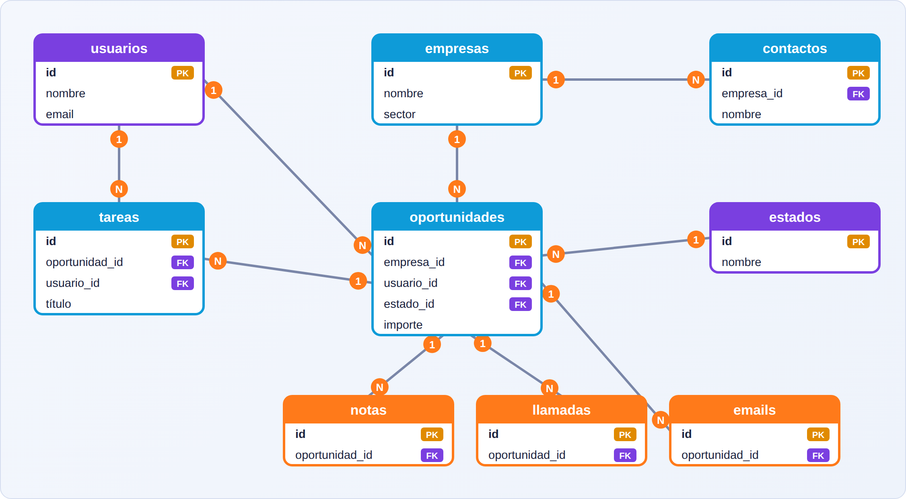
Qué ves en la imagen. Cada línea une dos entidades. Los números en los extremos indican cuántas pueden participar: «1» significa uno y «N» significa muchos. Por ejemplo, una empresa (1) tiene muchos contactos (N). Aprenderás a leer esta notación con detalle en la Parte 3.
Querer diseñar el CRM «completo» desde el primer día. Se acaba con 40 tablas que nadie usa. Empieza por el núcleo (empresas, contactos, oportunidades) y amplía cuando haga falta.
Verifica el diseño con preguntas del negocio. Si no puedes responderlas con las tablas que tienes, falta algo. Si sobran tablas que no ayudan a responder ninguna, quítalas.
Sin mirar el texto, nombra seis entidades del CRM y una relación entre dos de ellas. Después, escribe una pregunta del negocio y las entidades que se usarían para responderla.
Son tres análisis cortos hechos con el mismo método, para que practiques: una agenda de contactos, una tienda online y un sistema de reservas. Cada uno incorpora un reto de diseño distinto.
El análisis se aprende repitiéndolo. Cada caso te enseña a reconocer una situación que aparecerá en muchos proyectos: una agenda enseña a tratar datos que se repiten (varios teléfonos por persona); la tienda enseña la relación entre pedidos y productos; las reservas enseñan las reglas de solape.
Porque casi cualquier sistema que te pidan se parece a uno de estos tres patrones: guardar personas y sus datos, vender cosas, o reservar recursos en el tiempo.
Para cada caso verás: la descripción, las entidades, las relaciones y la regla principal. Intenta resolverlo tú antes de leer la solución.
Caso A. Agenda de contactos.
telefono1, telefono2, telefono3 limita y desperdicia. La solución es una entidad aparte.Caso B. Tienda online.
Caso C. Sistema de reservas.
En la agenda, Ana García tiene dos teléfonos (móvil y trabajo). En lugar de dos columnas, hay dos filas en la tabla de teléfonos, ambas enlazadas con Ana.
Una tienda de ropa guarda en cada línea de pedido el precio de venta y no solo la referencia al producto. Así, tres años después, puede reproducir la factura de un pedido aunque el producto haya subido de precio.
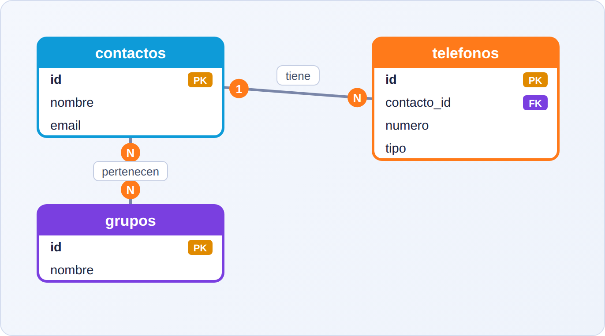
Qué ves en la imagen. Tres entidades. Un contacto está enlazado a muchos teléfonos (1 a N). Los contactos y los grupos se enlazan en ambos sentidos (N a N), algo que en la Parte 3 se resolverá con una tabla intermedia.
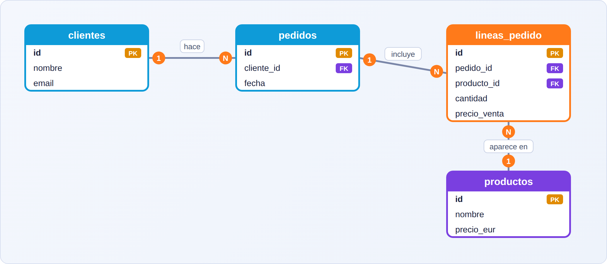
Qué ves en la imagen. Cuatro entidades. La línea de pedido está entre el pedido y el producto: es el puente que permite que un pedido tenga muchos productos y un producto esté en muchos pedidos. Guarda cantidad y precio de venta.
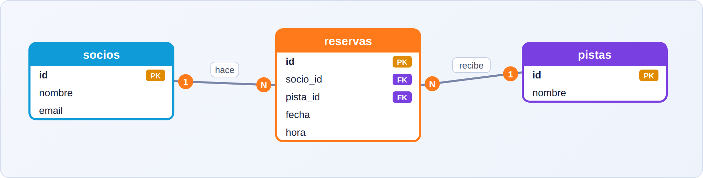
Qué ves en la imagen. Tres entidades. La reserva enlaza un socio con una pista en una fecha y hora. La regla del solape no se ve en el dibujo, pero hay que anotarla junto al diseño.
Copiar el diseño de un caso a otro sin comprobar que encaja. Una tienda y un sistema de reservas parecen similares (clientes que compran o reservan), pero tienen reglas distintas.
Reconoce los patrones: «varios datos del mismo tipo por entidad» (teléfonos), «puente entre dos entidades» (líneas de pedido) y «recurso con reglas de tiempo» (reservas). Una vez los identificas, reutilizas la solución.
Elige un negocio cercano (una peluquería, un colegio, una biblioteca). En diez minutos escribe sus entidades, sus relaciones y una regla importante.
Una plantilla de requisitos de datos es un documento sencillo, igual para todos los proyectos, donde recoges todo lo que has decidido en el análisis. Es el puente entre la idea y el diseño de tablas. Se rellena una ficha por entidad y una lista de relaciones y reglas.
Para dejar el análisis por escrito de forma ordenada. Sirve para revisar con el cliente, para no olvidar decisiones y para que otra persona (o tú dentro de seis meses) entienda el proyecto sin preguntar.
Los análisis hechos «de cabeza» se olvidan o se deforman. Una plantilla obliga a contestar siempre las mismas preguntas, y las preguntas olvidadas suelen ser las que luego causan problemas.
La plantilla tiene cuatro partes:
Ficha de la entidad CLIENTE de la tienda:
| Atributo | Tipo | Obligatorio | Único | Notas |
|---|---|---|---|---|
| id | número entero | sí | sí | Identificador automático |
| nombre | texto | sí | no | Nombre completo |
| texto | sí | sí | Se usa para iniciar sesión | |
| telefono | texto | no | no | Con prefijo internacional si se conoce |
| alta | fecha | sí | no | Por defecto, la fecha de hoy |
Una agencia que desarrolla aplicaciones usa siempre la misma plantilla en sus reuniones con clientes. Rellenarla en directo hace que el cliente descubra, sin tecnicismos, datos en los que no había pensado («¿y las devoluciones?»), y los incorpora antes de escribir una línea de código.
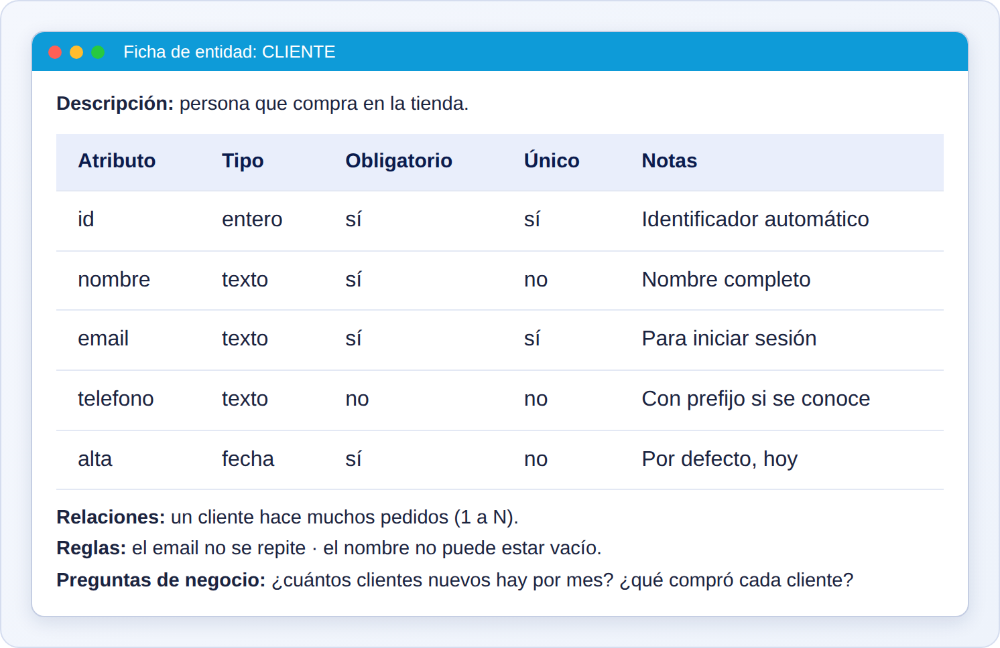
Qué ves en la imagen. Es la ficha de una entidad tal y como se vería en un documento de análisis: el nombre de la entidad arriba, su descripción, la tabla de atributos y, abajo, sus relaciones y reglas. Se rellena una por cada entidad.
id (entero, obligatorio, único); nombre (texto, obligatorio, no único); precio_eur (decimal, obligatorio, no único, no negativo); stock (entero, obligatorio, por defecto 0); activo (verdadero/falso, obligatorio, por defecto verdadero).Rellenar la plantilla una sola vez, al principio, y no actualizarla. Un análisis desactualizado engaña más que ayuda.
Guarda la plantilla junto al código (por ejemplo, en un documento en el mismo repositorio) y actualízala cada vez que cambie el diseño.
Con la plantilla de un proyecto, otra persona debería poder responder, sin preguntarte, qué datos se guardan, cuáles son obligatorios y qué reglas existen.
| Término | Significado |
|---|---|
| Entidad | Cosa de la que se guardan datos; acabará siendo una tabla |
| Atributo | Característica de una entidad; acabará siendo una columna |
| Relación | Conexión entre dos entidades |
| Regla | Condición que los datos deben cumplir |
| Obligatorio | Dato sin el cual la fila no tiene sentido |
| Opcional | Dato que puede faltar |
| Único | Dato que no puede repetirse entre filas |
| Valor por defecto | Valor que se usa si nadie indica otro |
| CRM | Aplicación para gestionar la relación con clientes |
| Oportunidad | Una posible venta, con importe y fase |
| Línea de pedido | Un producto con su cantidad y precio dentro de un pedido |
| Requisitos de datos | Descripción escrita de lo que se debe guardar y de sus reglas |
Si has acertado 8 o más, estás listo para la Parte 3. Si no, repasa los puntos de las preguntas falladas.